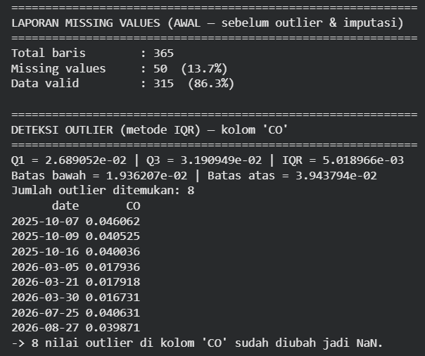
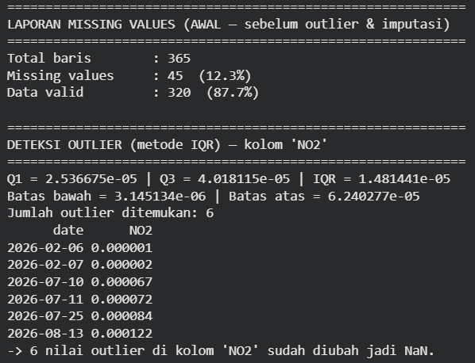
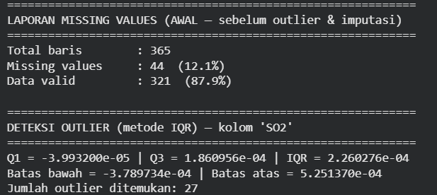

Pra-Pemrosesan Data Kewilayahan Kecamatan Bandung#
1. Preprocessing: Penanganan Outliers dan Interpolasi Data#
Pada tahap ini, data yang sudah terkumpul diolah agar siap digunakan sebagai masukan pada analisis lanjutan. Fokus utama pada tahap ini adalah menangani nilai yang menyimpang (outliers) dan mengisi nilai kosong (missing values) agar deret waktu menjadi konsisten secara temporal.
Deteksi Outlier dengan Metode IQR#
Metode Interquartile Range (IQR) digunakan untuk mendeteksi nilai pencilan pada kolom target, yaitu NO2. Nilai yang berada di luar batas bawah dan batas atas IQR akan diperlakukan sebagai outlier dan selanjutnya diubah menjadi NaN sebelum dilakukan interpolasi.
import pandas as pd
import numpy as np
import matplotlib.pyplot as plt
# Muat data hasil preprocessing awal
# Sesuaikan path sesuai lokasi file Anda
df = pd.read_csv("../file/NO2_Bandung_finalRAW.csv")
df['date'] = pd.to_datetime(df['date'])
df = df.sort_values('date').reset_index(drop=True)
# Hitung IQR
Q1 = df['NO2'].quantile(0.25)
Q3 = df['NO2'].quantile(0.75)
IQR = Q3 - Q1
lower_bound = Q1 - 1.5 * IQR
upper_bound = Q3 + 1.5 * IQR
# Deteksi outlier
outliers_iqr = df[(df['NO2'] < lower_bound) | (df['NO2'] > upper_bound)]
print("Jumlah Outlier (IQR):", len(outliers_iqr))
print(outliers_iqr[['date', 'NO2']].head())
Visualisasi Outlier dan Missing Values#
Berikut adalah visualisasi yang menunjukkan titik outlier serta missing values pada masing-masing polutan di Kecamatan Bandung.
CO — Karbon Monoksida#

NO₂ — Nitrogen Dioksida#

SO₂ — Sulfur Dioksida#

Gambar-gambar tersebut memperlihatkan bagaimana data mentah memiliki nilai yang menyimpang atau hilang sebelum dilakukan proses imputasi. Kondisi seperti ini umum terjadi pada data satelit karena adanya noise, gap data, dan nilai ekstrem yang tidak merepresentasikan kondisi lingkungan sebenarnya.
Penanganan Outlier dan Imputasi Data#
Setelah outlier ditemukan, nilai tersebut diubah menjadi NaN. Pada pendekatan yang digunakan di sini, kita tidak langsung membuang baris, melainkan mempertahankan semua tanggal harian dan melakukan imputasi terhadap nilai yang hilang.
import pandas as pd
import numpy as np
# ======================= KONFIGURASI =======================
CSV_PATH = "SO2_Bandung_finalRAW.csv"
VAR_NAME = "SO2"
DATE_COLUMN = "date"
OUTPUT_CSV_PATH = f"{VAR_NAME}_hasil_akhir.csv"
APPLY_IMPUTASI = True
OUTLIER_METODE = "iqr"
OUTLIER_ZSCORE_THRESHOLD = 3.0
# =============================================================
def reindex_ke_rentang_penuh(df: pd.DataFrame, date_column: str):
"""Reindex data ke rentang tanggal harian penuh (isi gap tanggal yang hilang)."""
df[date_column] = pd.to_datetime(df[date_column])
full_range = pd.date_range(start=df[date_column].min(), end=df[date_column].max(), freq="D")
df = (
df.set_index(date_column)
.reindex(full_range)
.rename_axis(date_column)
.reset_index()
)
return df, full_range
def laporan_missing_values(df: pd.DataFrame, output_col: str, label: str = ""):
"""Laporkan jumlah & persentase missing values pada kolom."""
print("=" * 60)
print(f"LAPORAN MISSING VALUES {label}".strip())
print("=" * 60)
total = len(df)
missing = df[output_col].isna().sum()
valid = total - missing
print(f"Total baris : {total}")
print(f"Missing values : {missing} ({missing/total*100:.1f}%)")
print(f"Data valid : {valid} ({valid/total*100:.1f}%)")
print()
def tandai_outlier_sebagai_nan(df: pd.DataFrame, column: str, metode: str = "iqr", threshold: float = 3.0):
"""Deteksi outlier lalu ubah nilainya jadi NaN (bukan dihapus barisnya)."""
x = df[column].dropna()
if x.empty:
print(f"Tidak ada data valid di kolom '{column}' untuk deteksi outlier.\n")
return df
if metode == "iqr":
Q1, Q3 = x.quantile(0.25), x.quantile(0.75)
IQR = Q3 - Q1
batas_bawah, batas_atas = Q1 - 1.5 * IQR, Q3 + 1.5 * IQR
mask_outlier = (df[column] < batas_bawah) | (df[column] > batas_atas)
print("=" * 60)
print(f"DETEKSI OUTLIER (metode IQR) — kolom '{column}'")
print("=" * 60)
print(f"Q1 = {Q1:.6e} | Q3 = {Q3:.6e} | IQR = {IQR:.6e}")
print(f"Batas bawah = {batas_bawah:.6e} | Batas atas = {batas_atas:.6e}")
elif metode == "zscore":
mean, std = x.mean(), x.std(ddof=1)
z = (df[column] - mean) / std
mask_outlier = z.abs() > threshold
print("=" * 60)
print(f"DETEKSI OUTLIER (metode Z-score, |z|>{threshold}) — kolom '{column}'")
print("=" * 60)
print(f"Mean = {mean:.6e} | Std = {std:.6e}")
else:
raise ValueError("metode harus 'iqr' atau 'zscore'")
mask_outlier = mask_outlier & df[column].notna()
n_outlier = mask_outlier.sum()
print(f"Jumlah outlier ditemukan: {n_outlier}")
if n_outlier > 0:
print(df.loc[mask_outlier, [DATE_COLUMN, column]].to_string(index=False))
df.loc[mask_outlier, column] = np.nan
print(f"-> {n_outlier} nilai outlier di kolom '{column}' sudah diubah jadi NaN.\n")
return df
def terapkan_imputasi(df: pd.DataFrame, output_col: str, metode: str = "mean_keseluruhan"):
"""Imputasi sederhana: isi NaN dengan mean keseluruhan data."""
if metode == "mean_keseluruhan":
nilai_isi = df[output_col].mean(skipna=True)
df[output_col] = df[output_col].fillna(nilai_isi)
print(f"Imputasi diterapkan: NaN diisi dengan mean keseluruhan = {nilai_isi:.8e}")
return df
def main():
print(f"Membaca file CSV: {CSV_PATH}\n")
try:
df = pd.read_csv(CSV_PATH)
except FileNotFoundError:
print(f"Error: File '{CSV_PATH}' tidak ditemukan!")
return
print(f"Total baris awal (dari CSV): {len(df)}")
if DATE_COLUMN not in df.columns or VAR_NAME not in df.columns:
print(f"Error: Kolom '{DATE_COLUMN}' atau '{VAR_NAME}' tidak ada di dalam file CSV!")
print(f"Kolom yang tersedia: {list(df.columns)}")
return
df, full_range = reindex_ke_rentang_penuh(df, DATE_COLUMN)
print(f"Rentang tanggal : {full_range.min().date()} s/d {full_range.max().date()}")
print(f"Total hari penuh : {len(full_range)}\n")
laporan_missing_values(df, VAR_NAME, label="(AWAL — sebelum outlier & imputasi)")
df = tandai_outlier_sebagai_nan(df, VAR_NAME, metode=OUTLIER_METODE, threshold=OUTLIER_ZSCORE_THRESHOLD)
laporan_missing_values(df, VAR_NAME, label="(SETELAH outlier -> NaN, sebelum imputasi)")
if APPLY_IMPUTASI:
df = terapkan_imputasi(df, VAR_NAME)
print()
laporan_missing_values(df, VAR_NAME, label="(SETELAH imputasi)")
df_out = df[[DATE_COLUMN, VAR_NAME]]
df_out.to_csv(OUTPUT_CSV_PATH, index=False)
print(f"Hasil disimpan ke: {OUTPUT_CSV_PATH}")
main()
Interpretasi Hasil#
Langkah-langkah di atas memiliki arti penting:
Reindex tanggal penuh memastikan bahwa seluruh periode pengamatan memiliki satu baris per hari.
Laporan missing values memberi gambaran seberapa banyak data yang hilang sebelum dan sesudah pemrosesan.
Deteksi outlier menggunakan IQR membantu menjaring nilai yang tidak masuk akal secara statistik.
Imputasi mean mengisi nilai yang hilang agar deret waktu tetap lengkap dan siap dipakai untuk analisis berikutnya.
Dengan pendekatan ini, data polutan di Kecamatan Bandung menjadi lebih konsisten, lebih rapi, dan siap digunakan sebagai masukan pada tahap berikutnya.
2. Interpretasi Proses Preprocessing#
Proses preprocessing merupakan langkah penting sebelum melakukan analisis lanjutan. Tanpa handling yang tepat terhadap outlier dan missing values, hasil analisis bisa sangat bias dan tidak merepresentasikan kondisi sebenarnya di lapangan.
Pada kasus Kecamatan Bandung, proses ini digunakan untuk memastikan bahwa data deret waktu konsisten dan stabil sebelum masuk ke tahap berikutnya, seperti ekstraksi fitur, visualisasi statistik, atau pemodelan machine learning.
Dengan metode IQR dan interpolasi linier, data yang semula memiliki lonjakan ekstrem dan celah nilai dapat dibersihkan secara sistematis. Akibatnya, pola temporal yang muncul di kemudian hari menjadi lebih akurat dan lebih mudah diinterpretasikan.